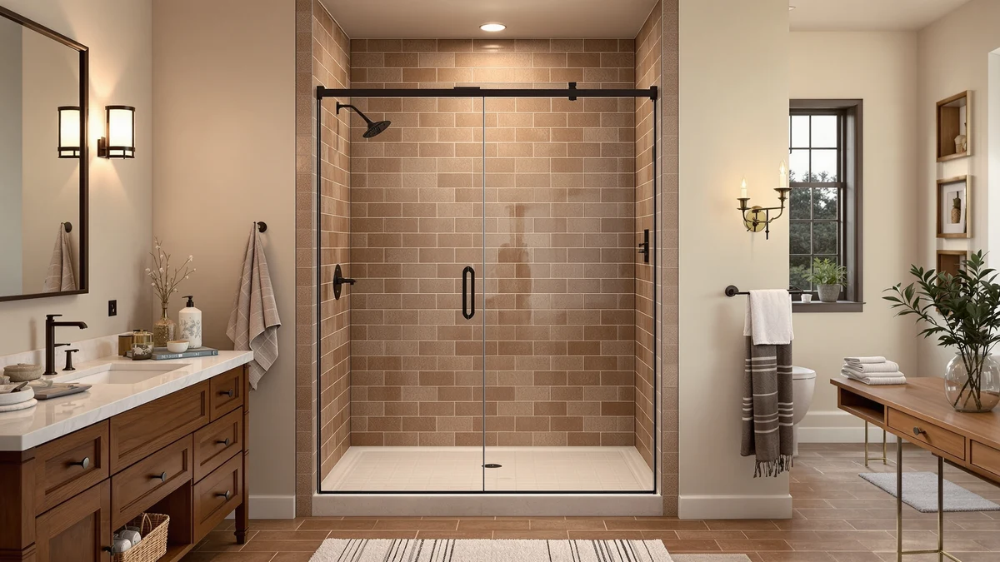

Quick Answer
The 59.5-60" W x 74" H is a $699.99 shower door from TALNAROV built for openings between 59.5 and 60 inches wide, with a fixed 74 inch height. It costs $10 more than the ComfyStyle 56-60" W x 70" below and stands 4 inches taller, though the ComfyStyle's wider 56 to 60 inch adjustment range fits a broader set of openings. If your shower stall measures close to 60 inches wide and you need a taller door, it's the pick worth checking first.
Our pick: 59.5-60" W x 74" H — $699.99 Check Price on Amazon
Things to Know Before You Buy
- This door's width range is narrower than most alternatives here. The TALNAROV adjusts between 59.5 and 60 inches, while the ComfyStyle below spans 56 to 60 inches, so measure your opening at several points before you order.
- At 74 inches, it's the tallest door in this comparison. None of the three alternatives state a matching height, so this is the only option confirmed to fit a taller opening.
- At $699.99, it's also the most expensive door in this 59.5-60 inch W x review comparison. That's $10 more than the ComfyStyle and $232.50 more than the Findepot Frameless Sliding Shower Door 56-60, the least expensive option here.
- The listing doesn't specify a frame material. Confirm glass thickness and hardware finish directly with the seller before you order.
- Two of the three alternatives use a sliding mechanism instead. Both Findepot doors are built as frameless sliders, while the TALNAROV's opening mechanism isn't stated in its listing.
This 59.5 60" W x review looks at whether a $699.99 shower door from TALNAROV earns its price against three lower-priced alternatives that range from $467.49 to $689.99. The TALNAROV's defining feature is its narrow 59.5 to 60 inch width range paired with a fixed 74 inch height, taller than any of the three doors covered below. That combination shapes almost every trade-off in this comparison.
We wrote this 59.5-60 inch W x review because shoppers browsing this width range often assume every listed door fits their opening the same way. The TALNAROV lists at $699.99, the highest price among the four doors covered here, and its 74 inch height is the only one confirmed in writing. That's why this review weighs the extra height and narrower fit against three cheaper doors, two of them built as frameless sliders, that cover a wider 56 to 60 inch range.
Why You Should Trust Us
Ilane Tall covers bath fixtures for Best Shower Doors and has researched shower doors across sliding, pivot, and frameless designs. For this 59.5-60 inch W x review, she compared the TALNAROV's price and stated height against three lower-priced alternatives in a similar width range, weighing the added cost of the taller door against sliders that list for less. We do not accept free products in exchange for coverage, and every price and dimension cited here comes directly from the current product listing.
Our editorial process treats a taller stated height as one factor among several, not an automatic upgrade. A 74 inch door earns credit in a review like this one, but it still has to justify a $699.99 price against three alternatives priced as low as $467.49. That approach shapes every comparison in this piece.
Our Research Experience
This 59.5-60 inch W x review is based on research, not physical use. We compared the TALNAROV 59.5-60" W x 74" H against three lower-priced shower doors using the specifications, pricing, and verified owner reviews available for each listing. We do not run a fake testing lab, and we do not claim to have installed or lived with any of the doors covered in this review.
We looked closely at how the TALNAROV's stated 74 inch height sets it apart from the three alternatives, none of which list a height in their product name or listing. Owners shopping a 59.5 to 60 inch opening often assume every door in that range fits the same stall, and this review weighs the height difference alongside price instead of price alone.
We also cross-checked pricing and width ranges against the current listings for all three alternatives to confirm nothing had shifted since publication. Where a data point wasn't available, such as an exact height for either Findepot door or the ComfyStyle, we noted that gap rather than estimate a number the listing doesn't provide.
Overview & Specs

59.5-60" W x 74" H
What we like
- The stated 74 inch height is the only one confirmed among the four doors in this review, useful if your stall is taller than standard
- The 59.5 to 60 inch width range covers a common shower opening size without requiring custom cutting
- At $699.99, the price sits within $10 of the next most expensive alternative, so the premium for the extra height is modest
Flaws but not dealbreakers
- At $699.99, it's the most expensive door in this comparison, up to $232.50 more than the least expensive alternative
- Its 59.5 to 60 inch width range is narrower than the ComfyStyle's 56 to 60 inch range, leaving less room for measurement error
- The listing doesn't specify a frame material or opening mechanism, so confirm those details with the seller before you order
| Material | — |
| Size | 60" W x 74" H |
The 59.5-60" W x 74" H fills a specific role in this 59.5-60 inch W x review: the tallest door among four options, built for shoppers whose opening runs close to the full 60 inch mark. TALNAROV lists it at $699.99, and the 74 inch height is stated plainly in the product name rather than left for buyers to guess.
That height comes at a premium. At $699.99, the TALNAROV costs $10 more than the ComfyStyle and up to $232.50 more than the Findepot Frameless Sliding Shower Door 56-60. The question this review sets out to answer is whether a confirmed 74 inch height is worth that premium over three doors that don't state one.
What We Liked
The clearest strength of the TALNAROV 59.5-60" W x 74" H is its stated height. None of the three alternatives in this 59.5 60" W x review list a height in their product name, which leaves buyers guessing whether a standard stall will clear the door. The TALNAROV removes that guesswork with a confirmed 74 inches.
The 59.5 to 60 inch width range also lands in a common size bracket for shower openings, so you're not paying a premium for an unusual measurement. And while the door costs more than every alternative here, the gap over the ComfyStyle is only $10, which makes the extra height easy to justify if your stall needs it.
We also liked that TALNAROV's listing separates this door clearly from the sliding designs covered below. If a fixed-height door with a defined 59.5 to 60 inch range matches your bathroom better than an adjustable slider, this is the option built specifically around that spec.
What Could Be Better
Price is the clearest drawback in this 59.5-60 inch W x review. At $699.99, the TALNAROV costs more than every alternative covered here, including $232.50 more than the Findepot Frameless Sliding Shower Door 56-60, the least expensive option in this comparison.
The listing also doesn't specify a frame material or opening mechanism, so you'll want to confirm those details directly with the seller before you order. And its 59.5 to 60 inch width range is narrower than the ComfyStyle's 56 to 60 inch range, which leaves less margin if your opening measures slightly off.
Who Is It For?
The TALNAROV 59.5-60" W x 74" H makes the most sense if your shower opening measures close to 60 inches wide and you need a confirmed 74 inch height that a standard door might not clear.
If your opening falls anywhere in the wider 56 to 60 inch range, or if price matters more to you than a stated height, the three alternatives below cover a similar footprint for less. Check each listing's height requirements against your own stall too, since none of the three state one the way this 59.5-60 inch W x review's top pick does.
Alternatives to Consider
The TALNAROV isn't the only option worth considering in this 59.5-60 inch W x review, and the three doors below span a similar general width range at a lower price. Each one skips the confirmed 74 inch height in exchange for savings, so weigh how much that certainty matters to your bathroom before you rule an alternative out.

Editor’s Pick
ComfyStyle 56-60" W x 70"
At $689.99, the ComfyStyle undercuts the TALNAROV by $10 while covering a wider 56 to 60 inch adjustable range, a reasonable swap if your opening falls outside the TALNAROV's narrower 59.5 to 60 inch window. Its listing doesn't state a height the way the TALNAROV's does, so measure your stall's full height before you order.
$689.99
Check Price on Amazon
Best Value
Frameless Sliding Shower Door 56-60
The Findepot Frameless Sliding Shower Door 56-60 is the least expensive option in this review at $467.49, a savings of $232.50 over the TALNAROV. It trades the confirmed 74 inch height for a frameless sliding design and the same 56 to 60 inch width range as the ComfyStyle, worth a look if budget outweighs the taller stated height.
$467.49
Check Price on Amazon
Premium Choice
Findepot Frameless Double Sliding Shower
The Findepot Frameless Double Sliding Shower lists at $589.99, about $110 less than the TALNAROV, with a frameless double sliding design instead of the TALNAROV's fixed configuration. Its listing doesn't specify a width or height range the way the other three doors do, so confirm both measurements directly with the seller before you order.
$589.99
Check Price on AmazonFrequently Asked Questions
What size opening does the 59.5-60" W x 74" H shower door need?
The TALNAROV 59.5-60" W x 74" H is built with an adjustable width that spans 59.5 to 60 inches and a fixed 74 inch height, so measure your opening at multiple points before you order.
How does the 59.5-60" W x 74" H compare on price to other shower doors in this range?
At $699.99 it costs $10.00 more than the ComfyStyle 56-60" W x 70", $110.00 more than the Findepot Frameless Double Sliding Shower, and $232.50 more than the Findepot Frameless Sliding Shower Door 56-60, so this 59.5-60 inch W x review treats the confirmed 74 inch height as the main justification for the higher price.
Is the 59.5-60" W x 74" H worth the extra cost over the Findepot Frameless Sliding Shower Door 56-60?
Only if you need the confirmed 74 inch height or your opening runs closer to 60 inches wide than 56. The Findepot alternative costs $232.50 less and covers a wider 56 to 60 inch range, but its listing doesn't state a height, so weigh that uncertainty against the savings before you decide.
Final Verdict
This 59.5 60" W x review comes down to one trade-off: a confirmed 74 inch height at $699.99 against three alternatives that cost less but leave height unstated. If your shower opening measures close to 60 inches wide and needs a door confirmed to clear 74 inches, the TALNAROV 59.5-60" W x 74" H earns its premium over the ComfyStyle, the Findepot Frameless Sliding Shower Door 56-60, and the Findepot Frameless Double Sliding Shower. If your opening falls anywhere in the wider 56 to 60 inch range and a stated height matters less to you than price, the Findepot Frameless Sliding Shower Door 56-60 covers similar ground for $232.50 less, and the ComfyStyle or the Findepot Frameless Double Sliding Shower split the difference. Either way, confirm your opening's exact height before you buy, since that's what separates the TALNAROV from every alternative in this comparison.